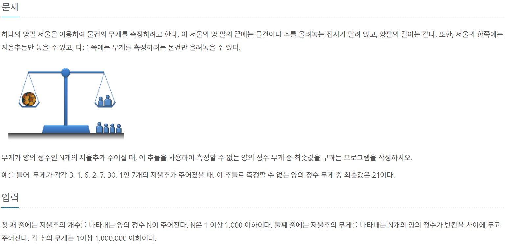
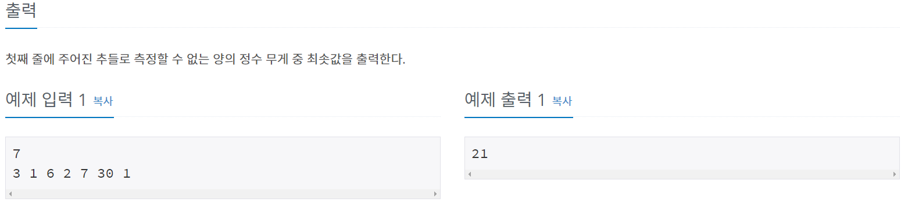
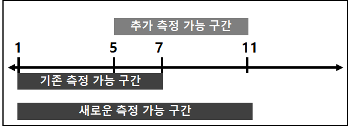
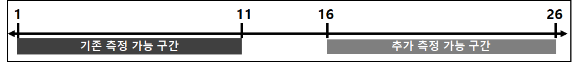

#문제정보
출처 : www.acmicpc.net/problem/2437
 
#문제분석
사용된 알고리즘 : 그리디(GREEDY), 누적합
문제풀이의 핵심은 측정 가능한 부분이 끊기지 않아야 한다는 것이다.예를들어, [1,7] 구간을 측정 가능한 상황에서 4KG 무게의 저울추가 추가로 주어졌다고 가정해 보자.

4KG 저울추 추가로 인해서, [1+4, 7+4] 의 추가 측정 가능 구간이 생긴다. 기존 측정 가능 구간 [1,7] 과, 추가 측정 가능 구간 [5,11]은 이어져 있기에 새로운 측정 가능 구간은 [1,11] 이라고 할 수 있다.
다음으로 [1,11] 구간을 측정 가능한 상황에서, 15KG 무게의 저울추가 추가로 주어졌다고 가정해 보자.

15KG 저울추 추가로 인해서, [1+16, 11+16] 의 추가 측정 가능 구간이 생긴다. 그러나 기존 측정 가능 구간 [1,11]과 추가 측정 가능 구간 [16,26] 사이에 공백이 생긴다. 즉 측정 가능한 부분이 끊겨버리고 만다.
따라서, 측정할 수 없는 무게의 최솟값은 12가된다.
이 과정을 코드로 표현하면 되는데, 주의해야할 점은 무게의 추가 오름차 순으로 정렬되어 있어야 한다는 것과, 누적합이 아닌 누적합 + 1 값을 출력해야 한다는 것이다.
#소스코드
#include <iostream>
#include <vector>
#include <algorithm>
using namespace std;
vector<int> v;
int n; // 1<=N<=1000
int sum;
int main()
{
cin >> n;
for (int i = 0 ; i < n ; ++i)
{
int temp;
cin >> temp;
v.push_back(temp);
}
sort(v.begin(), v.end());
for (int i = 0 ; i < n ; ++i)
{
if (v[i] > sum + 1)
break;
sum += v[i];
}
cout << sum + 1;
return 0;
}